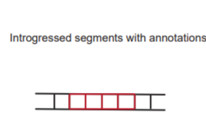

Arcseqhub - ancestral introgression analysis
(introduction of this project)
This project is to analyzing the DNA introgression of the archaic humans and modern human to reveal the status of archaic human in the evolution of modern human.
Meaning
(stating meaning of this project)
Benefit by the improvement of sequencing technology, we now have more complete human reference genome-CHM13, a "Telomere to Telomere" genome, to reveal more possibility in the archaic introgression.
What we are doing
(a dynamic flow chart about analysis procedure)
Step1
Mapping
Calling VCF

Step2
Filtering
Post-Filtering
Step3
Calling IBDmix
Func-analyzing



Progress
(introduce this project's futural plan)
Year1
Neanderthal
Denisovan
S* Calling
For the first step, we aims to reveal archaic introgression based on complete genome of Altai Neanderthal, along with three modern human genome-hg19, hg38 and chm13; next, we will add the analysis of Denisovan, along with the E-start calling to find more reliable archaic introgression.